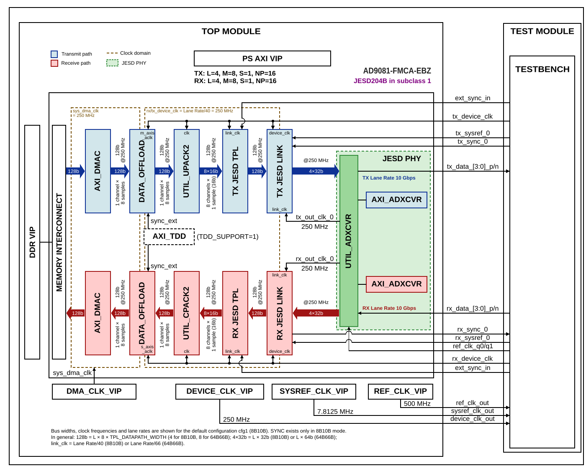

MxFE
Overview
The purpose of this testbench is to validate the JESD204B/C serial interface functionality of the projects/ad9081_fmca_ebz reference design, commonly referred to as the MxFE platform.
The entire HDL documentation can be found here AD9081-FMCA-EBZ HDL project.
Block design
The testbench block design includes part of the AD9081-FMCA-EBZ HDL reference design, along with VIPs used for clocking, reset, PS and DDR simulations. The TX data path is looped back to the RX data path at the serial lane level, allowing full TX-to-RX data integrity verification without an external device model.
Block diagram
The data path and clock domains are depicted in the below diagram:


Block name |
IP name |
Documentation |
Additional info |
|---|---|---|---|
AXI_DMAC |
2 instances, |
||
DATA_OFFLOAD |
2 instances, |
||
UTIL_UPACK2 |
|
||
UTIL_CPACK2 |
|
||
TX JESD TPL |
|
||
RX JESD TPL |
|
||
TX JESD LINK |
|
||
RX JESD LINK |
|
||
AXI_ADXCVR |
2 instances, |
||
UTIL_ADXCVR |
|
||
AXI_TDD |
|
||
MEMORY INTERCONNECT |
|
— |
Part of the test harness (AXI SmartConnect); connects both AXI_DMAC, the RX AXI_ADXCVR (EyeScan) and the PS AXI VIP to the DDR VIP |
Configuration parameters and modes
The following parameters of this testbench can be configured:
JESD_MODE: the JESD204 encoding mode (8B10B or 64B66B)
REF_CLK_RATE: the rate of the reference clock in MHz
LANE_RATE: the JESD204 lane rate in Gbps
PLL_TYPE: the transceiver PLL type (QPLL0 or QPLL1)
[RX/TX]_LANE_RATE: per-direction lane rate in Gbps
[RX/TX]_PLL_SEL: transceiver PLL selection (2 = QPLL1); set in some configuration files, but not used by the AD9081 block design
[RX/TX]_NUM_LINKS: number of JESD204 links
[RX/TX]_JESD_M: number of converters per link
[RX/TX]_JESD_L: number of lanes per link
[RX/TX]_JESD_S: number of samples per frame
[RX/TX]_JESD_NP: number of bits per sample
[RX/TX]_JESD_F: number of octets per frame per lane
[RX/TX]_JESD_K: number of frames per multiframe
TDD_SUPPORT: enables TDD (Time Division Duplex) engine integration
SHARED_DEVCLK: enables shared device clock between RX and TX paths
TDD_CHANNEL_CNT: number of TDD channels
TDD_SYNC_WIDTH: TDD sync signal width
TDD_SYNC_INT: TDD internal sync enable
TDD_SYNC_EXT: TDD external sync enable
TDD_SYNC_EXT_CDC: TDD external sync CDC enable
Configuration files
The following configuration files are available:
Parameter |
cfg1 |
cfg2_64b66b_np8 |
cfg3_64b66b_np12 |
cfg4_8b10b_np12 |
cfg5_204c_txmode_10_rxmode_11 |
cfg6_m16_l8_tdd |
|---|---|---|---|---|---|---|
JESD_MODE |
8B10B |
64B66B |
64B66B |
8B10B |
64B66B |
8B10B |
REF_CLK_RATE |
500 |
500 |
250 |
500 |
500 |
500 |
LANE_RATE |
10 |
16.5 |
16.5 |
10 |
16.5 |
10 |
PLL_TYPE |
QPLL0 |
QPLL1 |
QPLL1 |
QPLL0 |
QPLL1 |
QPLL0 |
RX_LANE_RATE |
10 |
16.5 |
16.5 |
10 |
16.5 |
10 |
RX_PLL_SEL |
— |
2 |
2 |
2 |
2 |
— |
TX_LANE_RATE |
10 |
16.5 |
16.5 |
10 |
16.5 |
10 |
TX_PLL_SEL |
— |
2 |
2 |
2 |
2 |
— |
RX_NUM_LINKS |
1 |
1 |
1 |
1 |
1 |
1 |
RX_JESD_M |
8 |
2 |
4 |
8 |
4 |
16 |
RX_JESD_L |
4 |
8 |
4 |
2 |
4 |
8 |
RX_JESD_S |
1 |
4 |
2 |
1 |
1 |
1 |
RX_JESD_NP |
16 |
8 |
12 |
12 |
16 |
16 |
RX_JESD_F |
4 |
1 |
3 |
6 |
2 |
4 |
RX_JESD_K |
32 |
256 |
256 |
32 |
128 |
32 |
TX_NUM_LINKS |
1 |
1 |
1 |
1 |
1 |
1 |
TX_JESD_M |
8 |
2 |
4 |
8 |
4 |
16 |
TX_JESD_L |
4 |
8 |
4 |
2 |
4 |
8 |
TX_JESD_S |
1 |
4 |
2 |
1 |
1 |
1 |
TX_JESD_NP |
16 |
8 |
12 |
12 |
16 |
16 |
TX_JESD_F |
4 |
1 |
3 |
6 |
2 |
4 |
TX_JESD_K |
32 |
256 |
256 |
32 |
128 |
32 |
TDD_SUPPORT |
0 |
0 |
0 |
0 |
0 |
1 |
SHARED_DEVCLK |
— |
— |
— |
— |
— |
1 |
TDD_CHANNEL_CNT |
— |
— |
— |
— |
— |
2 |
TDD_SYNC_WIDTH |
— |
— |
— |
— |
— |
32 |
TDD_SYNC_INT |
— |
— |
— |
— |
— |
1 |
TDD_SYNC_EXT |
— |
— |
— |
— |
— |
0 |
TDD_SYNC_EXT_CDC |
— |
— |
— |
— |
— |
0 |
Tests
The following test program file is available:
Test program |
Usage |
|---|---|
test_program |
Tests the MxFE JESD204 project data paths. |
Available configurations & tests combinations
The test program is compatible with all of the above mentioned configurations.
CPU/Memory interconnect addresses
Below are the CPU/Memory interconnect addresses used in this project:
Instance |
Address |
|---|---|
axi_intc |
0x4120_0000 |
adc_tpl |
0x44A1_0000 |
rx_xcvr |
0x44A6_0000 |
axi_jesd_rx |
0x44A9_0000 |
dac_tpl |
0x44B1_0000 |
tx_xcvr |
0x44B6_0000 |
axi_jesd_tx |
0x44B9_0000 |
rx_dma |
0x7C42_0000 |
tx_dma |
0x7C43_0000 |
tx_data_offload |
0x7C44_0000 |
rx_data_offload |
0x7C45_0000 |
axi_tdd * |
0x7C46_0000 |
ddr_axi_vip |
0x8000_0000 |
Legend
*instantiated only when TDD_SUPPORT=1
Interrupts
Below are the Programmable Logic interrupts used in this project:
Instance name |
HDL |
|---|---|
rx_dma |
12 |
tx_dma |
13 |
axi_jesd_rx |
14 |
axi_jesd_tx |
15 |
Test stimulus
The test program is structured into several tests as follows:
Environment bringup
The steps of the environment bringup are:
Create the environment
Start the environment
Assert the resets
JESD link object initialization and transceiver setup
Create and configure a JESD204 link object based on the RX configuration parameters (L, M, F, S, K, NP) and the encoding mode (8B10B or 64B66B).
Instantiate RX and TX link-layer objects and connect them to the AXI master sequencer with their respective base addresses.
Instantiate RX and TX transceiver objects.
Call
probe()on each to verify initial register states.
Clock frequency configuration
Set the reference clock (
REF_CLK) frequency based on the configuredREF_CLK_RATE.Compute the device clock and SYSREF clock from the link-layer object using
calc_device_clk()andcalc_sysref_clk().Apply the calculated frequencies to the corresponding clock VIP interfaces (
DEVICE_CLK,SYSREF_CLK,DMA_CLK).Start all clocks and configure transceiver clocks for both RX and TX using
setup_clocks()with the lane rate and reference clock.
JESD link test (DDS)
Tests the JESD204 data path using DDS-generated tones:
TX PHY initialization — bring up the TX transceiver.
DAC TPL configuration — for each TX converter, select DDS as the data source and configure tone amplitude (
DDS_SCALE_1) and frequency increment (DDS_INCR_1).Release DAC reset — deassert
RSTNon the DAC common block.Synchronize DDS cores — trigger DDS synchronization via the DAC common control register.
Configure data offload — set the RX offload to one-shot mode and the TX offload to normal (non-bypass) mode, without hardware sync.
Bring up TX link — start the TX link layer.
RX PHY initialization — bring up the RX transceiver.
ADC TPL configuration — enable all RX converter channels.
Release ADC reset — deassert
RSTNon the ADC common block.Bring up RX link — start the RX link layer.
Wait for link-up — wait for both TX and RX link layers to report link-up status.
Simulation delay — wait 5 us for data flow and link stabilization.
Link shutdown — bring down both links and transceivers.
JESD link test (DMA)
Tests the JESD204 data path using DMA-based stimulus:
TX PHY initialization — bring up the TX transceiver.
DAC TPL configuration — for each TX converter, select DMA as the data source.
Release DAC reset — deassert
RSTNon the DAC common block.Configure data offload — set the RX offload to one-shot mode and the TX offload to normal (non-bypass) mode, without hardware sync.
Write test data to DDR — write a deterministic incremental pattern to DDR memory via
BackdoorWrite32. Handles both 16-bit and 12-bit sample packing (based onTX_JESD_NP).Configure TX DMA — enable the TX DMA engine, set transfer length, source address, and submit the transfer.
Configure RX DMA — enable the RX DMA engine, set transfer length, destination address, and submit the transfer.
Wait for data propagation — wait 5 us for DMA and offload.
Bring up TX link — start the TX link layer.
RX PHY initialization — bring up the RX transceiver.
ADC TPL configuration — enable all RX converter channels.
Release ADC reset — deassert
RSTNon the ADC common block.Bring up RX link — start the RX link layer.
Wait for link-up — wait for both links to report link-up status.
Simulation delay — wait 5 us for data flow.
Verify captured data — call
check_captured_datato verify the received data in DDR matches the expected incremental pattern.Link shutdown — bring down both links and transceivers.
JESD link test (DMA — RX/TX bypass)
Runs the same DMA-based test as above with the TX data offload set to bypass mode and the RX data offload set to one-shot and bypass mode. The TX DMA runs in cyclic mode. This validates the direct DMA-to-JESD data path without offload buffering.
JESD link test (DMA — data offload — TDD)
Runs the DMA-based test with the TDD (Time Division Duplex) engine controlling
the data offloads. The test is run for every configuration, but the TDD engine
(axi_tdd_0) is instantiated only when TDD_SUPPORT=1 (cfg6_m16_l8_tdd);
for the other configurations the TDD register writes have no target:
TX offload — set to single-shot mode with hardware sync.
RX offload — set to single-shot mode with hardware sync.
TDD configuration — configure the TDD engine:
Set frame length to 2048 cycles.
Configure channel 0 (TX trigger): ON at cycle 0, OFF at cycle 10.
Configure channel 1 (RX trigger): ON at cycle 96, OFF at cycle 106 (accounts for roundtrip latency of ~96 cycles).
Enable both TDD channels.
Set the sync counter and enable internal sync.
The rest of the test follows the standard DMA-based flow. After data verification, the TDD engine is disabled.
JESD link test (DDS — external sync)
Tests the external synchronization mechanism with DDS-generated tones:
Bring up the full TX and RX data paths (same as the DDS test).
Configure data offload — set RX offload to one-shot mode with a defined transfer length.
Arm external sync — write to DAC and ADC TPL sync control registers and verify both report armed status via
DAC_SYNC_STATUSandADC_SYNC.Trigger external sync — pulse the
ext_syncsignal for onedevice_clkcycle.Verify sync capture — confirm that both DAC and ADC TPL blocks have captured the sync event (status transitions from armed to triggered). The received data is not checked in this test.
Link shutdown — bring down links and transceivers.
JESD link test (DMA — external sync)
Tests external synchronization with DMA-based stimulus. Combines the DMA data path setup with the external sync trigger and verification sequence described above. Only the sync status is verified; the captured data is not checked.
Stop the environment
- Environment Stop
The base testbench environment is stopped to end the test.
- Stop All Clocks
All clocks started previously (
REF_CLK,DEVICE_CLK,SYSREF_CLK) are stopped to ensure clean shutdown.
- Reporting
A final informational message indicates that the test has completed.
Building the testbench
The testbench is built upon ADI’s generic HDL reference design framework. ADI does not distribute compiled files of these projects so they must be built from the sources available here and here, with the specified hierarchy described Set up the Testbenches repository. To get the source you must clone the HDL repository, and then build the project as follows:
Linux/Cygwin/WSL
Example 1
Build all the possible combinations of tests and configurations, using only the command line.
user@analog:~$
cd testbenches/project/mxfe
user@analog:~/testbenches/project/mxfe$
make
Example 2
Build all the possible combinations of tests and configurations, using the Vivado GUI. This command will launch Vivado, will run the simulation and display the waveforms.
user@analog:~$
cd testbenches/project/mxfe
user@analog:~/testbenches/project/mxfe$
make MODE=gui
Example 3
Build a particular combination of test and configuration, using the Vivado GUI. This command will launch Vivado, will run the simulation and display the waveforms.
user@analog:~$
cd testbenches/project/mxfe
user@analog:~/testbenches/project/mxfe$
make MODE=gui CFG=cfg1 TST=test_program
The built projects can be found in the runs folder, where each configuration
specific build has its own folder named after the configuration file’s name.
Example: if the following command was run for a single configuration in the
clean folder (no runs folder available):
make CFG=cfg1
Then the subfolder under runs name will be:
cfg1
Resources
More information
Support
Analog Devices, Inc. will provide limited online support for anyone using the reference design with ADI components via the EngineerZone FPGA reference designs forum.
It should be noted, that the older the tools’ versions and release branches are, the lower the chances to receive support from ADI engineers.